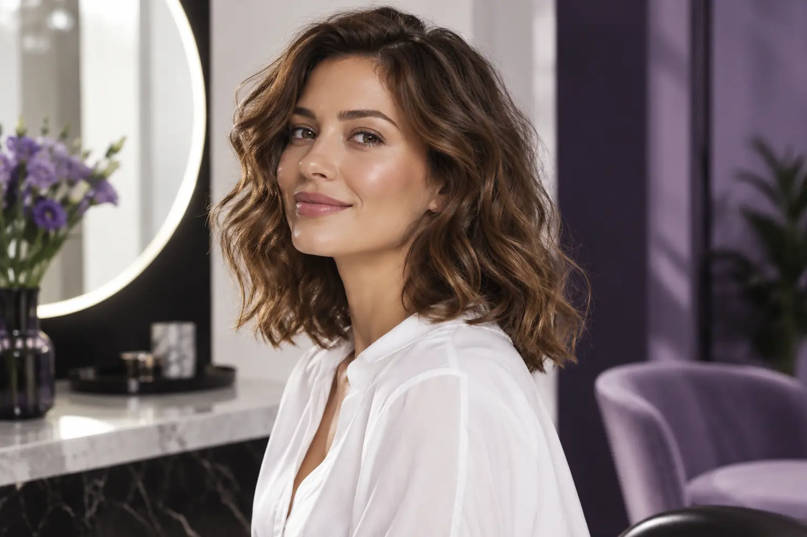

Kaip pasirinkti kirpimą: plaukų tekstūra, veido forma ir vizito eiga
Autorius: Madbeauty redakcija · Numatyta 2026 m. spalio 13 d. 16:00 (Lietuvos laiku)
Kirpimo pasirinkimą susiekite su norimu kontūru, natūraliu plaukų kritimu ir kasdiene priežiūra. Du iliustraciniai pavyzdžiai padės aiškiai apibrėžti, ką norite išlaikyti ir keisti.

Rinkdamiesi kirpimą pradėkite nuo norimo kontūro, natūralaus plaukų kritimo ir kasdienio formavimo įpročių. Veido forma gali padėti nusakyti, kokį įrėminimą mėgstate, tačiau pati nenulemia vienos visiems tinkamos šukuosenos. Prieš vizitą įvardykite, ką norite išlaikyti, ką keisti ir kokių darbų tikitės iš pasirinktos paslaugos.
Pradėkite nuo norimo pokyčio
Užuot prašę tik „patrumpinti“, nusakykite, kokio pokyčio siekiate: išsaugoti bendrą ilgį, pakeisti išorinį kontūrą, patrumpinti priekinę dalį ar įvesti sluoksnių. Tai padeda aptarti, kur palikti ilgį ir kuri forma jums svarbiausia. Jei turite pavyzdinę nuotrauką, parodykite joje patinkantį ilgį ar liniją ir aptarkite, kaip ją pritaikyti jūsų plaukams bei kasdienei priežiūrai.
Nuotrauka yra pokalbio pradžia, o ne tokio paties rezultato garantija. Daugiau apie tikslų ir priežiūros aptarimą skaitykite L’Oréal Professionnel konsultacijos apžvalgoje.
Įvertinkite tekstūrą ir kasdienę rutiną
Tiesūs, banguoti ar garbanoti plaukai gali skirtingai kristi ir atrodyti natūraliai išdžiovinti. Taip pat svarbu atskirti bendrą plaukų tankį nuo atskiro plauko storio. Vien nuotrauka šių savybių neparodo, todėl papasakokite, kaip paprastai nešiojate plaukus ir kiek laiko norite skirti jų formavimui.
- Ką norite išsaugoti: bendrą ilgį, esamą kontūrą ar plaukų kritimo kryptį?
- Ką norite keisti: priekinę liniją, ilgį, išorinį kontūrą ar sluoksnius?
- Kaip dažniausiai nešiojate plaukus ir kokio kasdienio formavimo norite?
- Kokie darbai įeina į pasirinktą paslaugą: kirpimas, plovimas, džiovinimas ar sušukavimas?
Kirpimo konsultacijoje aptariami pageidaujama forma ir plaukų savybės. Pagrindinius konsultacijos veiksnius aprašo SQA profesinis kirpimo standartas.
Du iliustraciniai pasirinkimo atvejai
Tai išgalvoti pavyzdžiai, ne tikrų klientų istorijos ar pažadėti rezultatai.
Išlaikyti pečių ilgį ir natūralų kontūrą
Jei norite išsaugoti pečius siekiantį ilgį ir natūralų išorinį siluetą, bet atnaujinti galiukus, užduotį galima apibrėžti taip: kiek ilgio palikti, o kiek patrumpinti; bendrą kontūrą išsaugoti; pokytį sutelkti į galiukus. Individualiai dar reikėtų įvertinti, kaip plaukai krinta ir kokia jų tekstūra, kad susitarimas atitiktų tai, kaip juos nešiojate kasdien.
Keisti priekinę liniją ir išorinį kontūrą
Jei norite ryškesnio pokyčio priekyje ir aplink visą kontūrą, bet sutinkate kasdien skirti laiko formavimui, pasakykite, kurią ilgio dalį norite palikti ir kur norite matyti trumpesnes linijas. Taip atskirsite, kas išsaugoma, nuo to, kas keičiama. Prieš apsisprendžiant individualiai vertinama, kaip pasiūlyta forma derės prie jūsų plaukų kritimo, tekstūros ir įprastos rutinos.
Prieš vizitą patikslinkite paslaugos apimtį
Pavadinimas „moterų kirpimas“ pats savaime nepasako, ar įtrauktas plovimas, džiovinimas ar sušukavimas. Vieno teikėjo meniu šiuos darbus išskiria atskirai ir pateikia kirpimo žirklėmis bei mašinėle variantus. Tai konkretaus meniu pavyzdys, o ne visų salonų taisyklė ar Madbeauty pasiūlos patvirtinimas. Palyginimui galite peržiūrėti šį vieno teikėjo plaukų paslaugų meniu; prieš susitardami patikrinkite visus įtrauktus darbus ir bendrą kainą.
Konsultacijos ir paslaugos eiga priklauso nuo teikėjo. Prieš pradedant kirpti susitarkite dėl norimo ilgio, kontūro, įtrauktų darbų ir kainos. Jei kasdieniam formavimui naudosite karštus įrankius, AAD nurodo, kad per didelis karštis gali pažeisti plaukus; konkreti priežiūra priklauso nuo jų savybių.
Plačiau apie kasdienį formavimą ir jo ribas skaitykite American Academy of Dermatology gairėse.
Kur tęsti paiešką
Jei norite peržiūrėti nacionalinę kategoriją, pasirinkite Moterų kirpimas ir miestą nurodykite atskirai. Katalogo pasirinkimas nepatvirtina, kad konkrečioje vietoje yra teikėjas ar laisvas vizito laikas. Bendrą pasiruošimą grožio paslaugos paieškai aptaria gidas „Grožio paslaugos pasirinkimas“.
Planuojamos vidinės nuorodos
Šaltiniai peržiūrai
- AAD · formavimas ir plaukų pažeidimas — Perskaitytas AAD dokumentas: per didelis karštis ir ilgalaikis stiprus plaukų įtempimas gali kenkti; šlapių plaukų tvarkymo patarimai priklauso nuo tekstūros. Jokios universalios temperatūros, sekundžių, gydymo ar plaukų slinkimo diagnozės. Trumpai tik aktualiam saugos aspektui, iki20 žodžių; šukuosenų pasirinkimas nėra medicininė rekomendacija.
- Žirmūnų 22 · plaukų paslaugų meniu — Perskaitytas šio teikėjo meniu: galiukų kirpimas, kirpimas su galvos plovimu, kirpimas su sušukavimu, atskiri mašinėlės ir žirklių variantai. Tik vieno salonų meniu pavyzdys, ne mūsų pasiūla, nacionalinės kainos ar universalūs laikai; konkrečių kainų į tekstą neperkelti.
- Hair consultation: goals, reference pictures and maintenance — Read original consultation advice: discuss own goals, use reference pictures as dialogue starter, consider texture and maintenance. Brand educational material, not a review of our article or a result guarantee. Max 15 derived words per article, max 200 combined.
- Cut and clipper hair using hairdressing techniques — Read pp1–7 consultation, natural perimeter/growth pattern/curl classification, shape and separate preparation advice. Professional standard supports terminology and consultation relevance only; no clinical eligibility or DIY cutting instructions; not Lithuanian licensing advice.